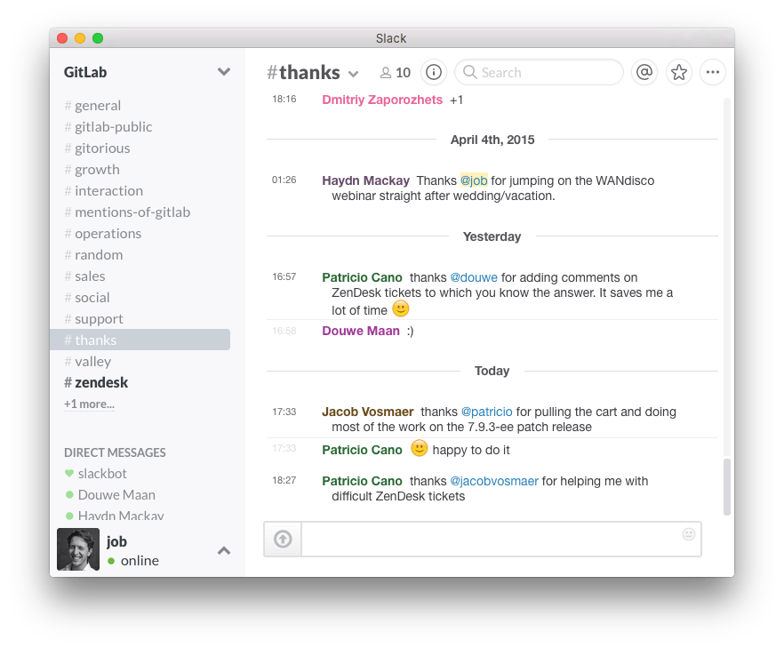

Манифест распределенной разработки (The Remote Manifesto)
Вольный перевод манифеста GitLab от 2017.03.22
Нельзя недооценить вклад Scrum и Agile манифестов в нашу работу. Они освободили нас от водопадного планирования и переусложненных процессов. Но удаленная разработка и непрерывная доставка требуют чего-то большего.
В Gitlab мы любим удаленный график, что влечет необходимость в максимально эффективной коммуникации.
Ниже приведены восемь принципов GitLab для современных команд, работающих удаленно:
1. Работа откуда хочешь
Удаленная работа позволяет проводить больше времени с теми, кто тебе дорог. Путешествовать без груза ежедневных поездок в офис. Более того, при удаленной работе меньше риск, что вас прервут при решении задачи.
2. Асинхронная коммуникация
Не пытайтесь изображать офис. Общайтесь, используя упоминания и чаты. Избегайте разрыва контекста и перестаньте спамить почтой. Тщательно выбирайте способ коммуникации, соответствующий вашей текущей задаче. Вопрос терпит несколько минут, часов или дней? Не отвлекайте других от работы, если это не действительно необходимо.
Если люди работают из одной локации, важно, чтобы они не экономили на текстовом сообщении.
Все и каждый должны использовать одни и те же средства для коммуникации.
3. Будущее не всегда прогнозируемо
Выпускайте релизы, когда они готовы, а не когда закончен спринт.
4. Общайтесь голосом онлайн
Нет необходимости сокращать личное общение. Технологии доступны как никогда раньше. Мы люди, нам нравится поговорить. Иногда нужно кратко проговорить голосом, когда использованы все прочие средства коммуникации.
5. Ежедневные созвоны для общения, обсуждения блокеров и будущего
Не рассказывайте, что вы сделали вчера—это не смотры, где все пытаются выглядеть занятыми. Наоборот, начните день с общения, выработки решений по блокерам и рассказа о планах, чтобы люди могли спланировать свою работу максимально эффективно.
6. Оценивайте нагрузку на точно известных параметрах
Не закапывайтесь в точной оценке нагрузки. Вы только потеряете время, и оценка всё равно будет неточной. Если взять основную идею, используйте размеры одежды для оценки. S, M или L. XL гарантированно даст неточный результат.
7. Общение в реальной жизни
Лучшие дни в нашей жизни—это совместные активности вне работы. Проводите время вместе вместо просто рабочего взаимодействия. Ходите на секции, посещайте вместе обеды у родителей сотрудников, устраивайте поездки на фестивали.
8. Хвалите за хорошую работу, не забывайте говорить "спасибо"
У нас в Gitlab есть Slack канал #thanks. Всегда приятно говорить и получать благодарности.

Вдохновленно постом на pandastrike.com
Примечания
Из своего опыта добавлю, что коммуникации необходимо дублировать. Если всё общение идет через интернет, необходимо иметь резервный канал на случай факапов, как телефон или оффлайн площадка, о которых знает вся команда.
В наших проектах мы использовали:
- slack или телеграм для текстового общения
- zoom для голосового общения, конфколлов или демонстрации экрана (также интересно попробовать appear.in)
- redmine, jira для управления задачами и проектной документации (asana, basecamp или gitlab)
- apiary и google docs для документации по api
- zeplin для дизайна
Также в комментариях к статье дали ссылку на remoteonly
Дата: 2017.03.22